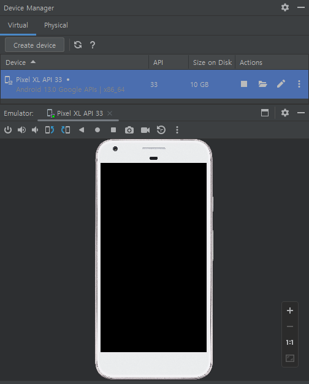
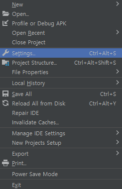
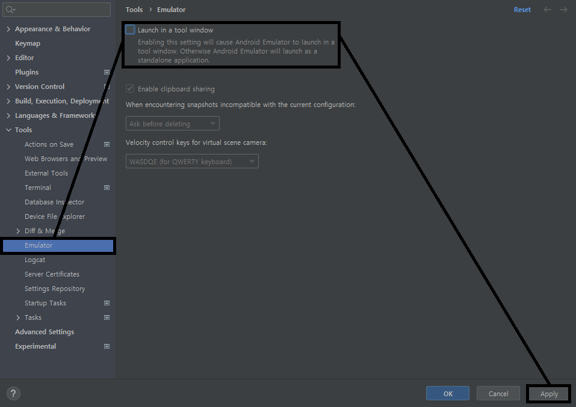
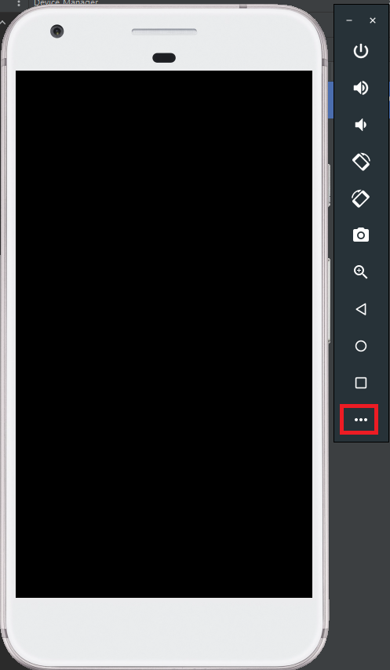
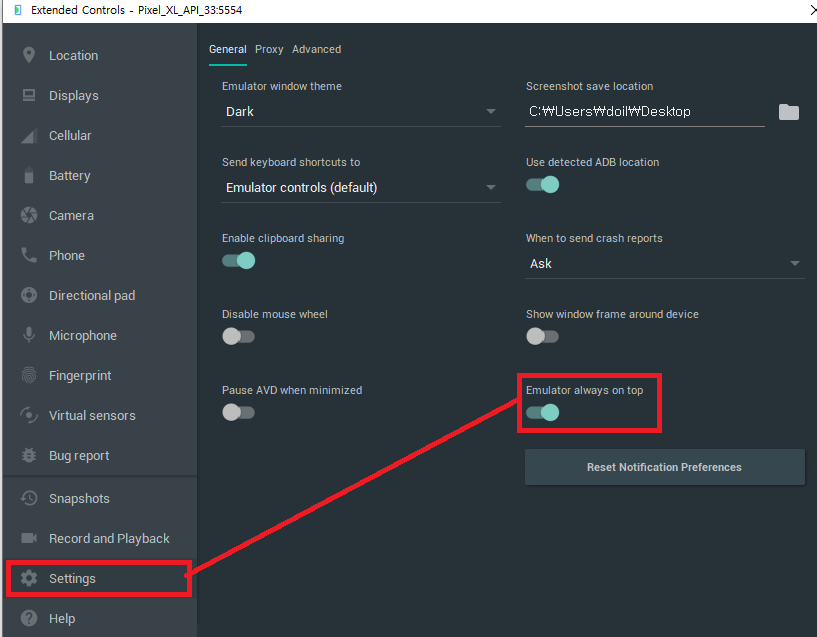

Android Studio에서 처음으로 가상 환경 에뮬레이터를 실행하면 다음과 같이 Device Manager Tap 에 고정되어 출력됩니다.
이번 포스팅 에서는 에뮬레이터를 Device Manager Tab에서 분리하는 방법과, 안드로이드 스튜디오를 클릭해도 에뮬레이터가 화면에서 뒤로 사라지는 현상을 방지하기 위한 방법에 대해서 소개해 드리도록 하겠습니다.
#1 에뮬레이터 분리하기

File → Settings... 혹은 Ctrl + Alt + S 단축키를 클릭합니다.

Settings 화면이 출력되면, Emulator 탭을 클릭한 뒤, Launch in a tool Window 항목의 체크를 해제하고 Apply를 눌러 줍니다.

Android Studio를 재부팅 해 주시면 에뮬레이터가 분리된 것을 확인할 수 있습니다.
#2 에뮬레이터 맨 앞으로 고정하기
안드로이드 스튜디오를 클릭 시 에뮬레이터가 뒤로 가는 것을 방지하기 위해 설정을 하도록 하겠습니다.
에뮬레이터의 가장 하단에 있는 ... 아이콘을 클릭합니다.

Extended Controls 라는 설정 창이 출력되는데, Settings 탭을 클릭 후, Emulator always on top 항목을 활성화 해 주면
에뮬레이터가 윈도우 화면 위에 항상 고정 됩니다.
